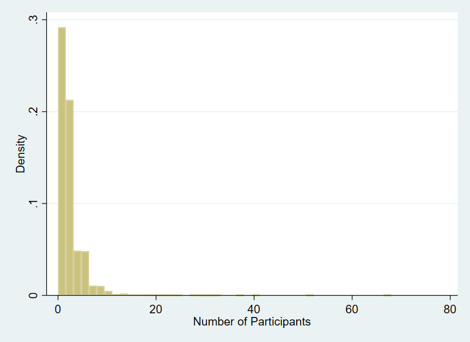
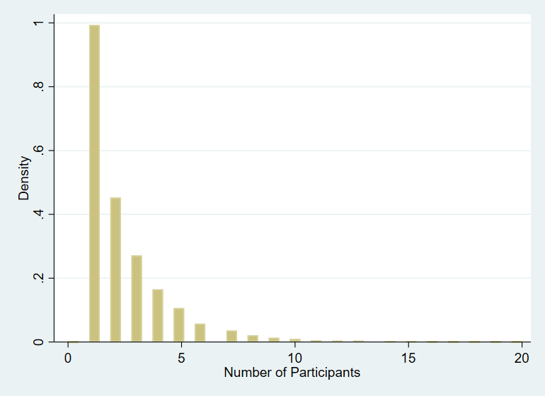
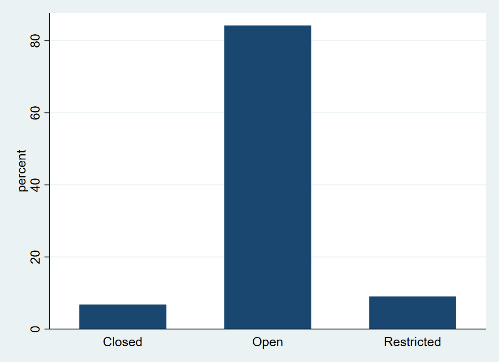
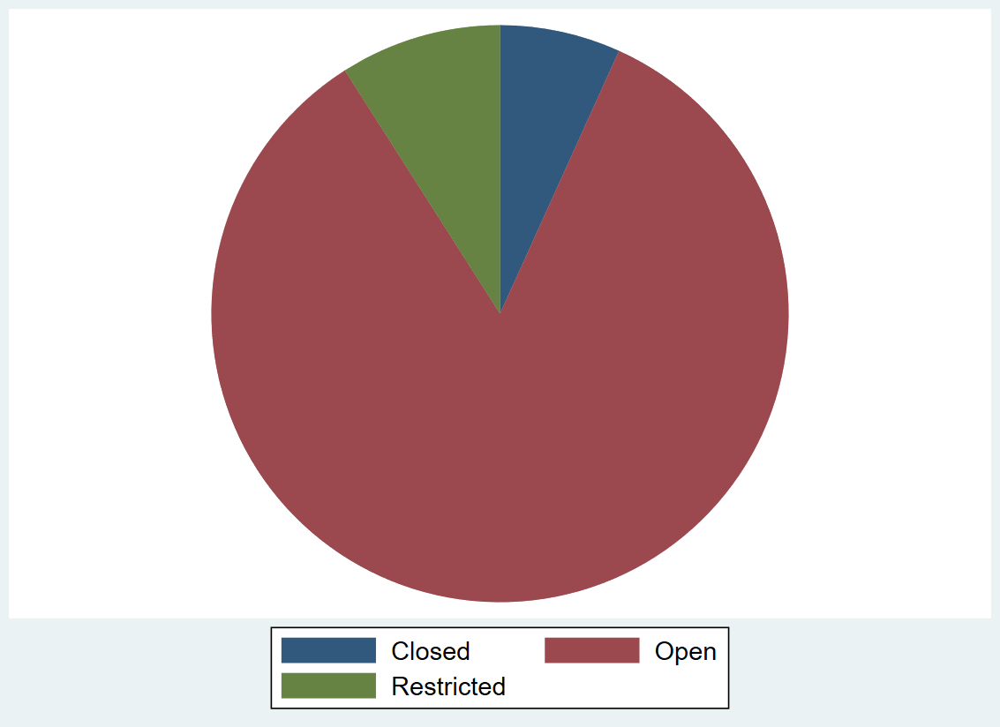
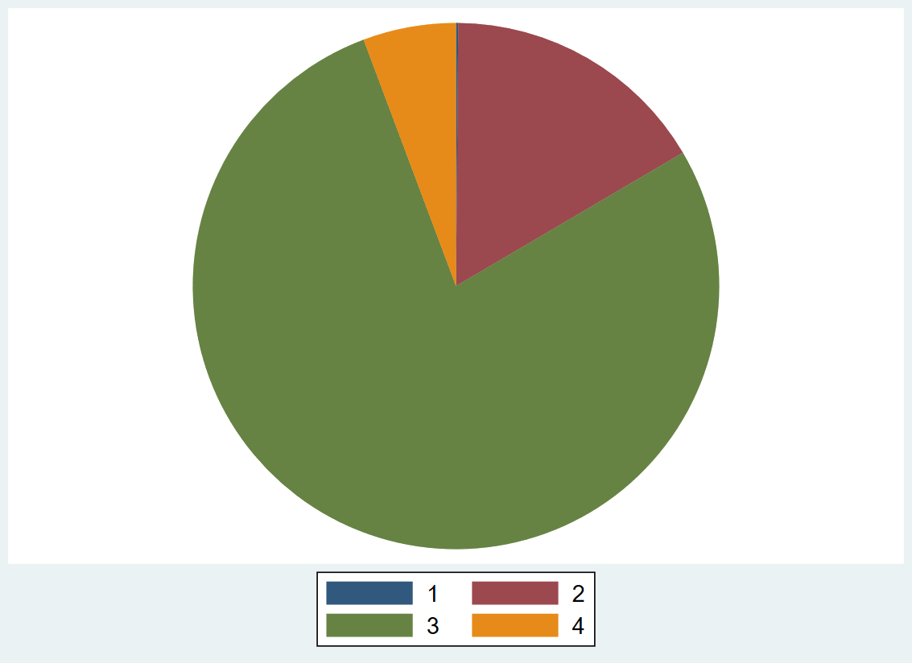
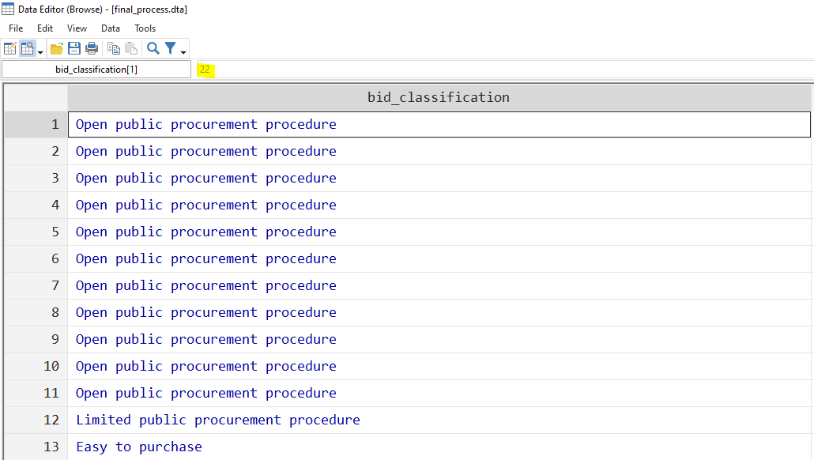

Exploring data in Stata
Luíza Andrade and Sushmita Samaddar
Recap
In the last session, we learned some Stata basics:
- How the interface is organized
- How to use do-files
- What commands are and how we can use them
- That data can be stored in different formats
- What syntax Stata can understand
- What are help files and how to read them
Recap
How the interface is organized

- What do each of these windows do?
Recap
How to use do-files
- How do we open the do-file editor?
- How do we run the code in the do-file?
Recap
Stata commands
- What are Stata commands?
- How do we learn how to use a command?
- What do
[]mean in a help file?
Recap
Viewing a dataset
- How can we see the data set that is currently loaded in Stata’s memory?
- How are rows and columns called in Stata?
Recap
Data types
- What are two different types of data that Stata can store?
- How are categorical variables stored in Stata?
Recap
Data types
- What are two different types of data that Stata can store?
During today’s session, we will go into a lot more detail about different types of data, what kind of information they can store and how we interact with them
Useful commands to explore data sets
As we explore variables of different types, we will learn how to use the following Stata commands:
browse: See all data in spreadsheet formatsummarize: Basic statistics for numeric variables- Obs (Number of observations), Mean, Std. Dev. (Standard deviation), Min (Minimum), Max (Maximum)
- Using the option detail provides additional statistics (such as percentiles, 4 smallest values, and 4 largest values)
Useful commands to explore data sets
As we explore variables of different types, we will learn how to use the following Stata commands:
describe: List of all variables in the data set in memory- Total number of variables & observations (size of matrix)
- Variable name, type, format, value label name, variable label
codebook: List of all variables in the data set in memory- Type of variable, range, unique values, units, number of missing values and descriptive statistics or frequency table
tabulate: Show a frequency table
Useful commands to explore data sets
As we explore variables of different types, we will learn how to use the following Stata commands for data visualization:
histogram: Visualize the distribution of a continuous or discrete variablegraph bar: Visualize continuous variables over discrete or categorical variablesgraph pie: Visualize groups in a categorical variable
Setting the stage
To start our session, let’s first set up our work environment
Exercise:
1. Launch Stata by opening the Stata project Introduction to Stata.stpr
2. Open a new do-file
3. Load the final_process data set
In case you don’t remember this from the last session, you can use the use command and the Stata project features to open a data set by typing
use "Data/Final/final_process.dta", clear
Exploring a data set: browse
- The first command we will use to explore our data set today is one that we have already used in the past:
browse browsecan be used to view all data set or some variables and observations- It is particularly useful to explore text variables, as they are difficult to summarize in Stata, and this allows us to see each entry at once
Do you remember how to use the command browse to see the data set?
Exploring a data set: summarize
- Another very useful command is
summarize - It can be used to display basic statistics for the entire dataset or for some variables and observations
Exploring a data set: summarize
Exercise: use summarize to see descriptive statistics for the entire dataset.
Tip: if you are not sure how to do that, look at the help file for the command by typing help summarize
Exploring a data set: summarize
Exercise: use summarize to see descriptive statistics for the entire dataset.
summarize Variable │ Obs Mean Std. Dev. Min Max
─────────────┼─────────────────────────────────────────────────────────
bid_id │ 25,000 230197.9 41450.57 168120 312400
process_name │ 0
unit_id │ 25,000 110140.9 9890.671 88575 229569
entity │ 0
entity_cou~y │ 24,999 6.934117 6.403738 1 21
─────────────┼─────────────────────────────────────────────────────────
year_init │ 22,534 2017.817 1.80997 2014 2021
month_init │ 22,534 6.674625 3.47338 1 12
evaluation~d │ 25,000 1.65496 .4753908 1 2
procuremen~e │ 24,985 1.78251 .7923181 1 3
procuremen~e │ 24,985 1.78251 .7923181 1 3
Exploring a data set: summarize
At this point, we should start using the critical thinking about data that we discussed in our first lecture
- Are there any statistics that might not make sense to interpret?
- What do they have in common?
Exploring a data set: summarize
At this point, we should start using the critical thinking about data that we discussed in our first lecture
- Are there any statistics that might not make sense to interpret?
- What do they have in common?
summarize is particularly useful for numeric variables
Exploring a data set: describe
- The next command we will use is called
describe - This command is used it to view metadata, that is, data about the data
- The syntax for this command is very similar to that of
summarize: you can use it without any arguments to describe the entire data set, or you can list the variables that you want to describe
Exploring a data set: describe
Exercise: use describe to see information for the entire dataset.
Exploring a data set: describe
describeContains data from ../DataWork/Data/Final/final_process.dta
obs: 25,000
vars: 26 11 Oct 2021 18:29
────────────────────────────────────────────────────────────────────────────────────────────────────────────────
storage display value
variable name type format label variable label
────────────────────────────────────────────────────────────────────────────────────────────────────────────────
bid_id long %10.0g Bidding ID
process_name str1013 %1013s Process Name
unit_id long %10.0g Organizational Unit ID
entity str131 %131s Entity Name
entity_county long %23.0g entity_county
Entity's County
year_init int %9.0g Year Procedure Was Initiated
month_init byte %9.0g Month Procedure Was Initiated
evaluation_me~d long %12.0g evaluation_method
Evaluation Method
procurement_t~e long %8.0g procurement_type
Procurement Type
bid_procedure long %57.0g bid_procedure
Bidding Procedure Name
bid_type long %26.0g bid_type Bidding Type
bid_classific~n long %92.0g bid_classification
Bidding Classification
bid_status long %33.0g bid_status
Bidding Status
bid_submissi~ne int %td Deadline for Submission of Bids
nr_participants int %9.0g Number of Participants
nr_nonlocal_b~s byte %9.0g Number of Non-Local Firms
nr_sme_bidders byte %9.0g Number of SME Bidders
nr_lots int %9.0g Number of Lots
process_value float %20.0fc Process Value
process_type long %10.0g process_type
Processing Type
bid_submissi~te int %td Deadline for Delivery of Initial Offers
bid_delivery_~e int %td Deadline for Delivery Request
bid_subm_del_~e int %td Bid Submission/Delivery Date
bid_submissio~d float %20.0fc Bid Submission Period
in_sample byte %9.0g Sampled Bid
process_id long %290.0g oi Process Tag
────────────────────────────────────────────────────────────────────────────────────────────────────────────────
Sorted by:
Exploring a data set: describe
describe is giving us the following information about the data set:
- Variable names: the names we use to reference a column in Stata
- Storage types: the type of information that the data contains – is it a number? A text?
- Display formats: how that number is formatted so that we humans can best interpret it – how many decimals are shown, for example
- Value labels: the names used for humans to best interpret the values in this variable – more about this soon
- Variable labels: the description of the column, or the names that we would use to reference a column to other humans
Exploring a data set: describe
describe is particularly useful to identify types of variables
- Variables with a value label are categorical variables
- This is why when we use
summarizeon these variables we get results that are not very meaningful: because the numbers are only stand-ins for categories - For example, 0 is commonly used to represent “No”, and 1 is commonly used to represent “Yes”
- This is why when we use
Exploring a data set: describe
describe is particularly useful to identify types of variables
- Variables with a value label are categorical variables
- This is why when we use
summarizeon these variables we get results that are not very meaningful: because the numbers are only stand-ins for categories - For example, 0 is commonly used to represent “No”, and 1 is commonly used to represent “Yes”
- This is why when we use
- Variables that have the display format
%tdare date variables- This is why when we use
summarizeon these variables we get results that are not very meaningful: because Stata counts time in miliseconds starting on the first millisecond of 1 January 1960 - We can then choose how to see this information: in dates and time, in date, in months, etc.
- We will learn more about this when we talk about cleaning date variables
- This is why when we use
Exploring a data set: describe
describe is particularly useful to identify types of variables
- Variables whose storage type starts with
strarestringvariables, that is, they contain text- This is why they are not shown when we use summarize - because Stata does not know how to calculate the average of a text
- All other variables are numeric
We will learn more about each of these types of variable and how to use them in this session.
Exploring numeric variables
Based on what we saw in the result for describe, we can tell that the numeric variables in our data set are:
bid_id
unit_id
process_id
year_init
month_init
nr_participants
nr_nonlocal_bidders
nr_sme_bidders
nr_lots
process_value
in_sample
Let’s take a look at how we can see information about them.
Exploring numeric variables
Let’s start with some general information about the variable nr_participants using the command codebook
. codebook nr_participants
────────────────────────────────────────────────────────────────────────────────────────────────────────────────
nr_participants Number of Participants
────────────────────────────────────────────────────────────────────────────────────────────────────────────────
type: numeric (int)
range: [0,68] units: 1
unique values: 35 missing .: 2,452/25,000
mean: 2.45099
std. dev: 2.31929
percentiles: 10% 25% 50% 75% 90%
1 1 2 3 5
Exploring numeric variables
- The number of participants in a process varies from 0 to 68
- There are 36 unique values for this variable, which means that not all numbers between 0 and 68 are present
- There are 2,452 missing observations. What does this mean?
- There are 25,000 processes in the data set. However, we don’t know the number of participants for 2,452 of them
- In the process for which we don’t know the number of participants, we will see a
.in this column when browing the data set
Subsetting observations
- The expression
ifallows us to subset observations, that is, we can choose observations based on a logical condition. - For example, if we wanted to see all the observations in the data set for which we don’t know the number of participants, we would type
browse if nr_participants == .Note that we wrote == instead of =. This is because we are perfoming a logical operation. We will talk more about these expressions soon.
Exploring numeric variables
Another way of seeing descriptive statistics for a numeric variable is using summarize
. summarize nr_participants
Variable │ Obs Mean Std. Dev. Min Max
─────────────┼─────────────────────────────────────────────────────────
nr_partici~s │ 22,548 2.450993 2.319291 0 68
Exploring numeric variables
- Here, we can see the minimum and maximum values of the variable, which are 0 and 68, as we already knew
- It also shows the number of observations with valid information about it, which is 24,548, as we also knew from the codebook
- We can also see the mean and the standard deviation
- All this information was already present in the codebook, but the codebook had other data as well
- This is a simpler way to visualize the content of numeric variables, particularly when you want to communicate information about many variables in one table
Exploring numeric variables
Exercise: use the command summarize to explore the distribution of variables nr_participants, nr_nonlocal_bidders, and nr_sme_bidders.
Variable │ Obs Mean Std. Dev. Min Max ─────────────┼───────────────────────────────────────────────────────── nr_partici~s │ 22,548 2.450993 2.319291 0 68 nr_nonloca~s │ 22,548 1.187644 1.839975 0 46 nr_sme_bid~s │ 22,548 .2515522 .6144718 0 14
Exploring numeric variables
Exercise: use the command summarize to explore the distribution of variables nr_participants, nr_nonlocal_bidders, and nr_sme_bidders.
. summarize nr_participants nr_nonlocal_bidders nr_sme_bidders
Variable │ Obs Mean Std. Dev. Min Max
─────────────┼─────────────────────────────────────────────────────────
nr_partici~s │ 22,548 2.450993 2.319291 0 68
nr_nonloca~s │ 22,548 1.187644 1.839975 0 46
nr_sme_bid~s │ 22,548 .2515522 .6144718 0 14
Exploring numeric variables
- Another, perhaps more intuitive way to present numeric variables is through graphs
- Let’s start by looking at a histogram of the variable
nr_participants - The command to create histograms is called, not surprisingly,
histogram - This command has only one required argument: the name of the variable for which we want to create a histogram
Exploring numeric variables
Exercise: create a histogram of the variable nr_participants.
Exploring numeric variables
histogram nr_participants
Subsetting observations
- The previous graph was not very informative because outliers caused the X axis to extend to very high numbers even though there were not many observations to be displayed with more than 20 participants
- We can improve this graph by displaying only processes with less than 20 participants
- To do this, we can use the same strategy that we used before to subset observations: an
ifstatement - Can you guess what it should look like?
Subsetting observations
Exercise: create a histogram of the variable nr_participants including only cases where a process has less than 20 participants.
Subsetting observations
Exercise: create a histogram of the variable nr_participants including only cases where a process has less than 20 participants.
histogram nr_participants if nr_participants < 20
Exploring text variables
- As we mentioned when discussing the command
describe, text variables can be identified by the their “string” type - The process data set we are using contains two text variables:
entityprocess_name
- These variables typically have a large number of unique values
- There are not many statistical analysis that we can do with string variables in Stata
- But they may still be useful to include in a data set, particularly for the purpose of identifying information
Exploring text variables
. codebook entity process_name
────────────────────────────────────────────────────────────────────────────────────────────────────────────────
entity Entity Name
────────────────────────────────────────────────────────────────────────────────────────────────────────────────
type: string (str131)
unique values: 1,892 missing "": 0/25,000
examples: "GRAD ZAGREB"
"HRVATSKE CESTE D.O.O. ZAGREB"
"KLINIčKI BOLNIčKI CENTAR OSIJEK"
"OPćINA KRAPINSKE TOPLICE"
warning: variable has embedded and trailing blanks
────────────────────────────────────────────────────────────────────────────────────────────────────────────────
process_name Process Name
────────────────────────────────────────────────────────────────────────────────────────────────────────────────
type: string (str1013)
unique values: 21,656 missing "": 0/25,000
examples: "Izvođenje građevinsko-zanatskih radova na dječjem
igralištu u GK Split 3 - Dobrilina ulica"
"Nabava potrošnog medicinskog materijala -Obloge za
rane i ostomijska pomagala za potrebe Kliničke
bolnice Merkur"
"Poštanske usluge"
"UNIFORME ZA ZAŠTITARE - ČUVARE"
warning: variable has embedded and trailing blanks
Exploring text variables
- The “type” of variable starts with “str” and is followed by the maximum number of characters in the variables
- As expected, we have a large number of unique values
- Missing values are represented by
""instead of. - By default, Stata shows random examples of values in text variables
- As mentioned earlier, the easiest way to interact with these variables in Stata is to browse them
Exploring categorical variables
As we noted when using describe, one way to identify categorical variables is when they have value labels. In the process data set, these are the categorical variables we can find:
entity_countyevaluation_methodprocurement_typebid_procedurebid_typebid_classificationbid_statusprocess_type
Exploring categorical variables
As before, let’s start by using codebook to inspect a categorical variable.
. codebook process_type
────────────────────────────────────────────────────────────────────────────────────────────────────────────────
process_type Processing Type
────────────────────────────────────────────────────────────────────────────────────────────────────────────────
type: numeric (long)
label: process_type
range: [1,3] units: 1
unique values: 3 missing .: 8/25,000
tabulation: Freq. Numeric Label
1,691 1 Closed
21,043 2 Open
2,258 3 Restricted
8 .
Exploring categorical variables
- Some information here is common to all types of data:
- We see the type of variable
- The number of unique values is shown
- We can also see the number of missing values
- Most of the information in the codebook is very similar to that of numeric variables:
- The type of variable is
numeric - We see the range of values it takes
- Missing values are represented by
.
- The type of variable is
- However, some information is unique to this type of variable:
- We see a frequency table instead of summary statistics of random examples
- The name of the value label is indicated
Exploring categorical variables
- As you can see, having value labels is a very important feature of categorical variables
- Just like Stata refers to variables by their variable names and humans refer to them using variable labels, Stata will refer to the different categories in a categorical variable using numbers, while humans will refer to them using value labels
- This is because humans understand descriptive names better than numbers, but that is not the case for computers (computers can’t make much sense of natural language, this is why Stata cannot summarize text variables)
- We connect a label to each value a categorical variable may take so both humans and computers can understand them
Exploring categorical variables
You can also see the definition of a value label using labelbook
. labelbook process_type
────────────────────────────────────────────────────────────────────────────────────────────────────────────────
value label process_type
────────────────────────────────────────────────────────────────────────────────────────────────────────────────
values labels
range: [1,3] string length: [4,10]
N: 3 unique at full length: yes
gaps: no unique at length 12: yes
missing .*: 0 null string: no
leading/trailing blanks: no
numeric -> numeric: no
definition
1 Closed
2 Open
3 Restricted
variables: process_type
We will see next how value labels are important for us to understand categorical variables
Exploring categorical variables
- The command
tabulatecounts the number of observations that take each value in a categorical variable (that is, it creates a frequency table) - Note that when we inspect this variable, we are shown the labels of the category automatically
. tabulate process_type
Processing │
Type │ Freq. Percent Cum.
────────────┼───────────────────────────────────
Closed │ 1,691 6.77 6.77
Open │ 21,043 84.20 90.97
Restricted │ 2,258 9.03 100.00
────────────┼───────────────────────────────────
Total │ 24,992 100.00
Exploring categorical variables
- We can use the option
nolabeloftabulateto hide the value labels - This is an optional argument of the command
- As you may remember from the first lab, this means why will use a comma (
,) to separate it from the other arguments
Exploring categorical variables
Exercise: use the tabulate command with the optional option nolabel to display a frequency table of the variable process_type
Exploring categorical variables
. tabulate process_type, nolabel
Processing │
Type │ Freq. Percent Cum.
────────────┼───────────────────────────────────
1 │ 1,691 6.77 6.77
2 │ 21,043 84.20 90.97
3 │ 2,258 9.03 100.00
────────────┼───────────────────────────────────
Total │ 24,992 100.00
- This is how Stata reads this variable
- For us, however, this is much less informative
Exploring categorical variables
- We can also explore the relationship between two categorical variables using
tabulate - To do so, list two variable names as arguments for the command instead of only one
Exploring categorical variables
Exercise: use the tabulate command to explore how the variables process_type and procurement_type are related.
Exploring categorical variables
Exercise: use the tabulate command to explore how the variables process_type and procurement_type are related.
. tabulate process_type procurement_type
Processing │ Procurement Type
Type │ Goods Services Works │ Total
───────────┼─────────────────────────────────┼──────────
Closed │ 615 781 295 │ 1,691
Open │ 9,593 6,315 5,120 │ 21,028
Restricted │ 940 1,020 298 │ 2,258
───────────┼─────────────────────────────────┼──────────
Total │ 11,148 8,116 5,713 │ 24,977
Commenting do-files
- When writing a do-file, it is very useful to be able to add notes and comments in natural language, that is, in English or Croatian
- Comments are used to organize and explain the code so it is easier for you to read it and edit it later on
- We use a few special characters to tell Stata what parts of a do-file it should run, and what parts is should ignore
Commenting do-files
/* comment */Used for long comments or to explain many lines of code* commentUsed to explain what happens on the following few rows// commentUsed to explain the same line of code
Commenting do-files
* Explore the categorical variables process_type
tabulate process_type // Simple tabulation
tabulate process_type, nolabel // Showing underlying numeric values instead of value labels
tabulate process_type procurement_type // Cross tabulationExploring categorical variables
- When creating graphs that use categorical variables, we also see the value labels
- Try running the following two commands to see how graphs can be used to visualize categorical variables
gr bar, over(process_type)
gr pie, over(process_type)Exploring categorical variables
gr bar, over(process_type)
Exploring categorical variables
gr pie, over(process_type)
Exploring categorical variables
When we remove the value label, on the other hand, they become much harder to interpret
label drop bid_type
gr pie, over(bid_type)
Exploring categorical variables
When we open the dataset, we also see the value label. But when we click on a specific observation for that variable, we can see the underlying numeric value.
browse bid_classification
Exploring categorical variables
In summary:
- The numbers we see in categorical variables don’t have any meaning
- They are only a way for Stata to store and handle the data efficiently
- What we humans care about are the categories they represent
- A value label is what connects the number that Stata understands to a category that we humans are interested
- When communicating to Stata, though, we will refer to the categories using the numbers that represent them
Exploring categorical variables
- When giving instructions to Stata, we will refer to a category by its underlying number
- To see an example of this, try to use the
tabulatecommand with andifstatement to see a frequency table of the type of process for processes of procurement type goods
Exploring categorical variables
- When giving instructions to Stata, we will refer to a category by its underlying number
- To see an example of this, try to use the
tabulatecommand with andifstatement to see a frequency table of the type of process for processes of procurement type goods
Exploring categorical variables
Exercise: print a frequency table of process type when procurement type is goods
Exploring categorical variables
Exercise: print a frequency table of process type when procurement type is goods
. tabulate process_type if procurement_type == 1
Processing │
Type │ Freq. Percent Cum.
────────────┼───────────────────────────────────
Closed │ 615 5.52 5.52
Open │ 9,593 86.05 91.57
Restricted │ 940 8.43 100.00
────────────┼───────────────────────────────────
Total │ 11,148 100.00
Exploring date variables
The date variables in this data set were identified when we used describe as those that have the format %td:
bid_submission_datebid_delivery_datebid_subm_del_datebid_submission_deadline
Exploring date variables
As usual, let’s see what codebook gives us when we use codebook
. codebook bid_submission_date
────────────────────────────────────────────────────────────────────────────────────────────────────────────────
bid_submission_date Deadline for Delivery of Initial Offers
────────────────────────────────────────────────────────────────────────────────────────────────────────────────
type: numeric daily date (int)
range: [20572,22413] units: 1
or equivalently: [28apr2016,13may2021] units: days
unique values: 670 missing .: 23,889/25,000
mean: 21679.8 = 10may2019 (+ 19 hours)
std. dev: 453.766
percentiles: 10% 25% 50% 75% 90%
21035 21284 21738 22075 22258
04aug2017 10apr2018 08jul2019 09jun2020 09dec2020
Exploring date variables
Stata clearly recognizes this variable as representing a date:
- Units are days
- Ranges are shown in both dates and numbers
- Missing values are represented by
. - Percentiles are described in both numbers and dates
Exploring date variables
- The relationship between numbers and dates in date variables is even clearer than in categorical variables
- As discussed earlier, the easiest way for Stata to store information is through numbers
- Applying a date format is how we let Stata know that these numbers represent dates
- There are different formats to represent dates, such as
%td(15mar2005) and%%tdnn/DD/YY(3/15/05) - Stata knows that variables in date format are dates
- There are different formats to represent dates, such as
- Stata counts time in miliseconds starting on the first millisecond of 1 January 1960
Summary
In this session, we learned
- A few new commands to explore data and create graphs
- How to select subsets of the data using
ifexpressions - How value labels are used to create categorical variables
- How to add comments to do-files
- How Stata stores dates and how we can format data variables for humans to understand them